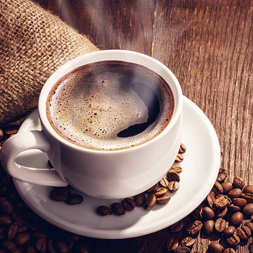
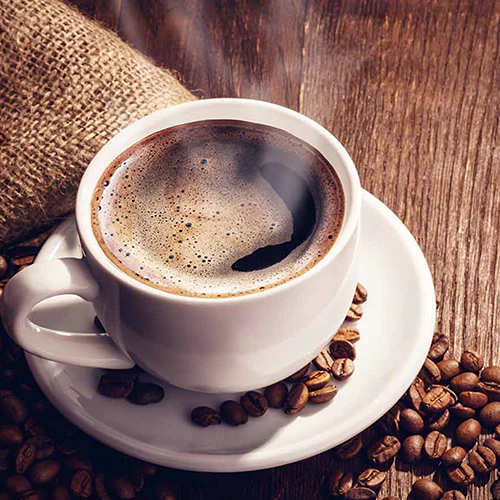
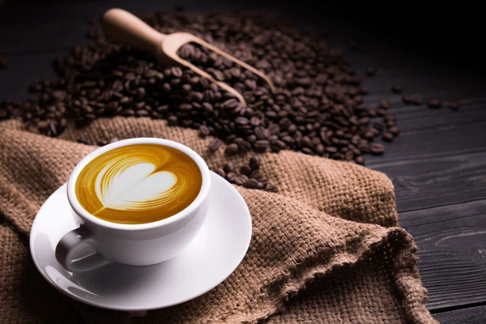
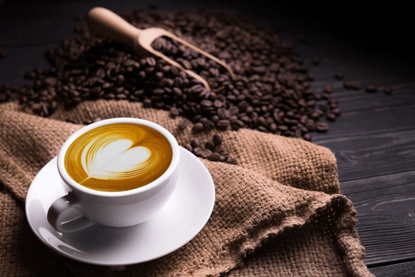

Coffee tastes better when it is strong!
Do you agree?
A 2017 review of clinical trials found that drinking coffee is generally safe within usual levels of intake and is more likely to improve health outcomes than to cause harm at doses of 3 or 4 cups of coffee daily. Exceptions include possible increased risk in women having bone fractures, and a possible increased risk in pregnant women of fetal loss or decreased birth weight. Results were complicated by poor study quality, and differences in age, gender, health status, and serving size.


 


 
